Mubes IKSASS 2025 — Konsolidasi & Arah Baru
Muktamar Besar IKSASS 2025 menjadi ruang pertemuan lintas generasi alumni Pondok Pesantren Salafiyah Syafi’iyah Sukorejo. Bukan sekadar forum pengambilan keputusan, momen ini mempertemukan gagasan, pengalaman, dan semangat kebersamaan untuk meneguhkan arah perjuangan organisasi ke depan.
IKSASS
Dokumentasi
 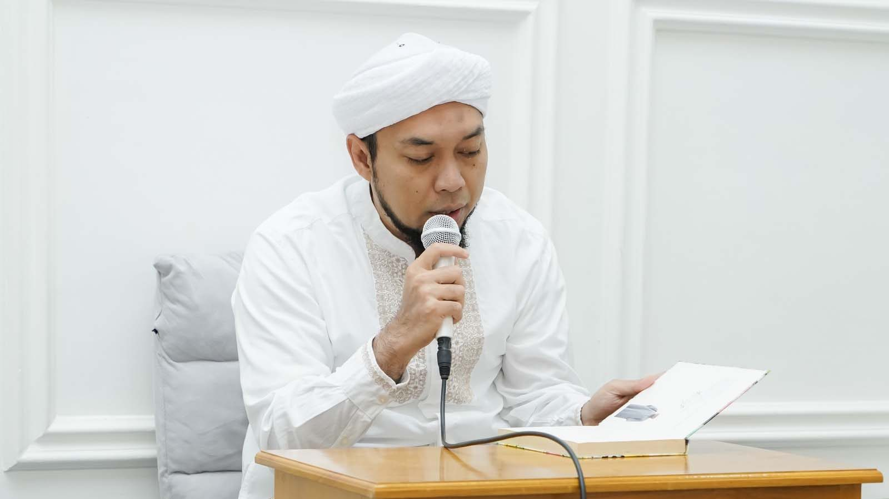
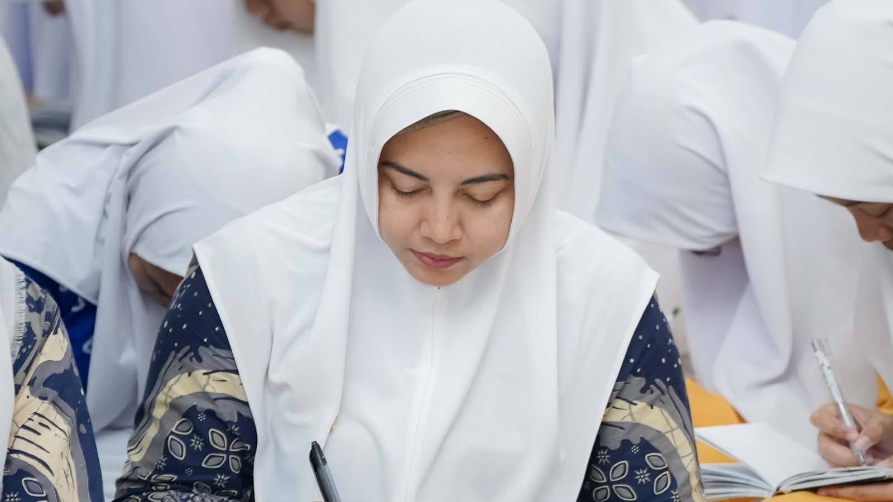
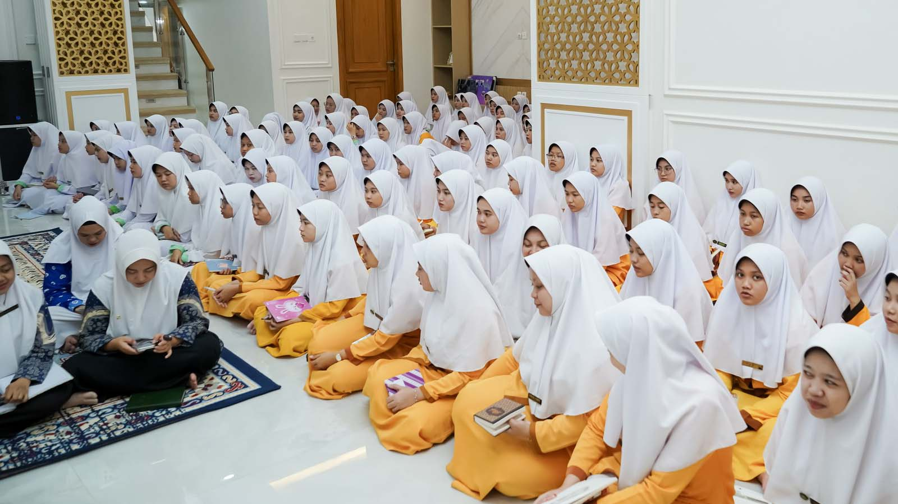
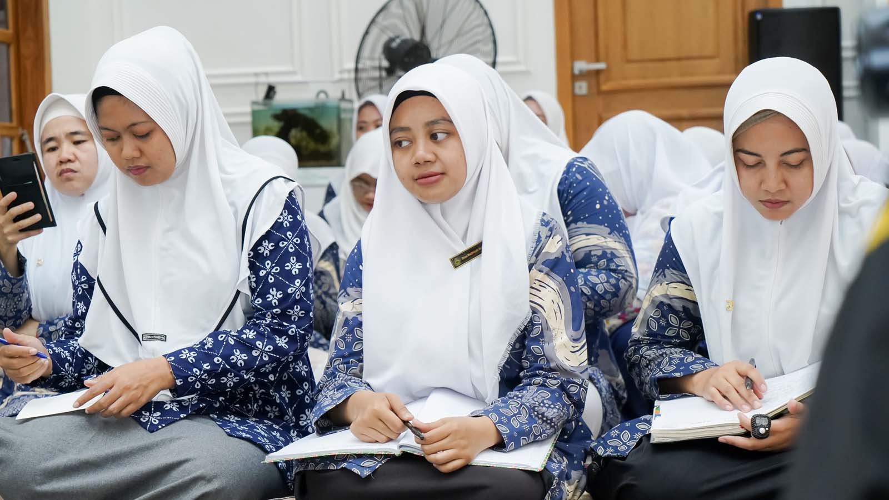
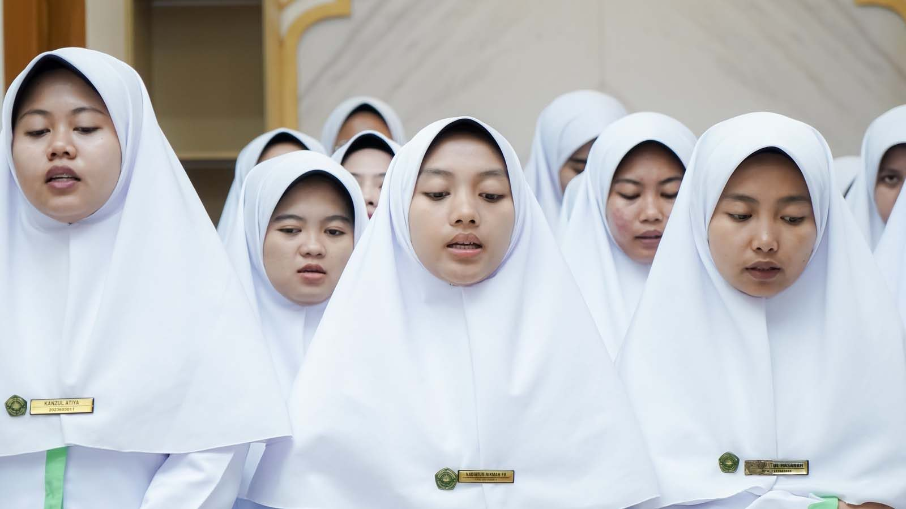
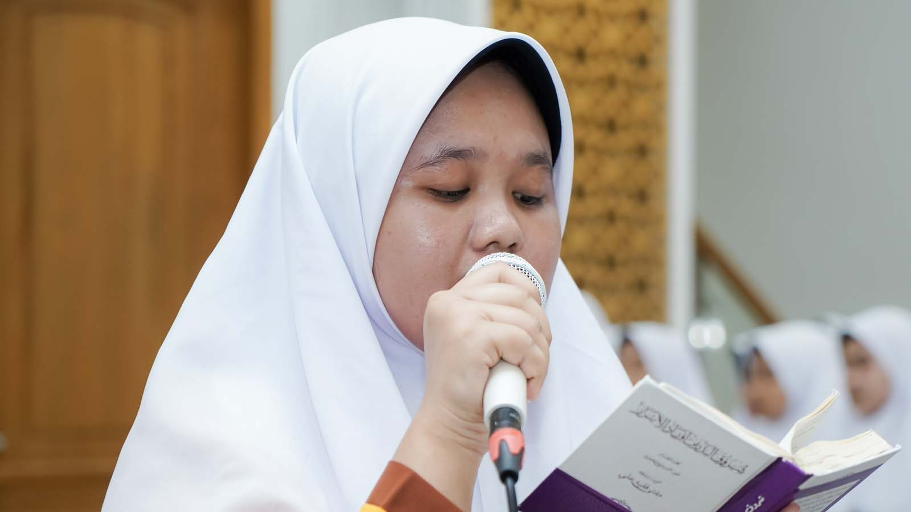
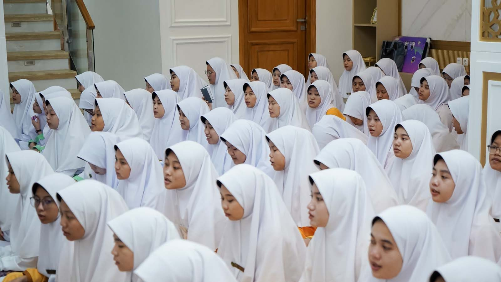
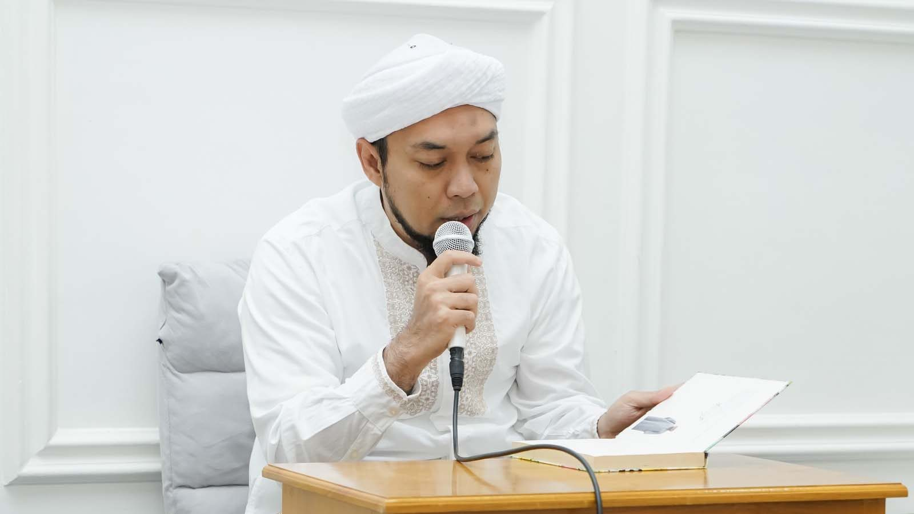
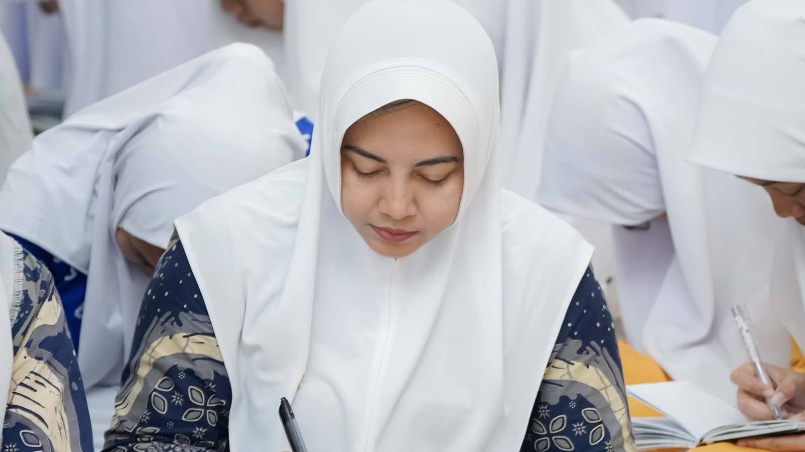
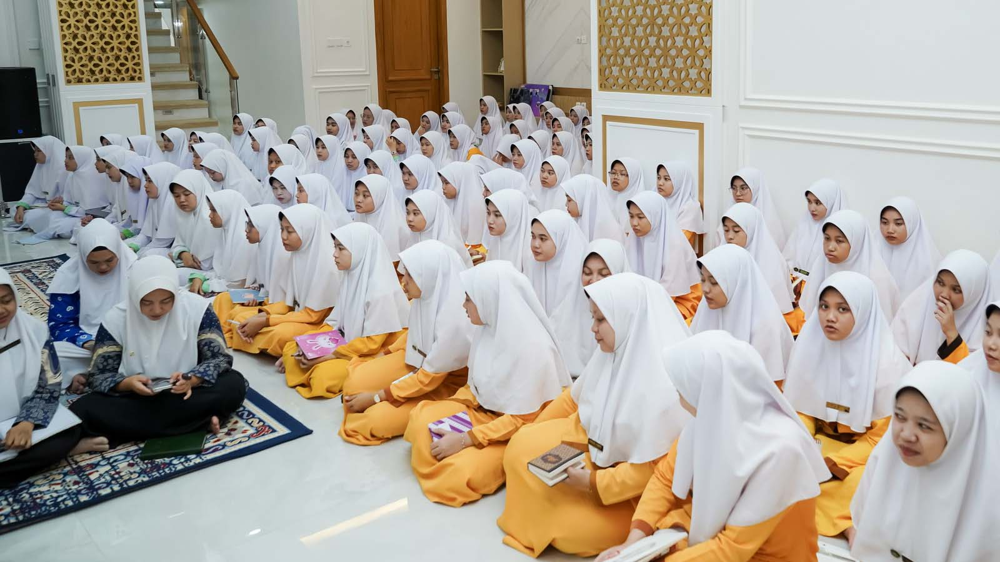
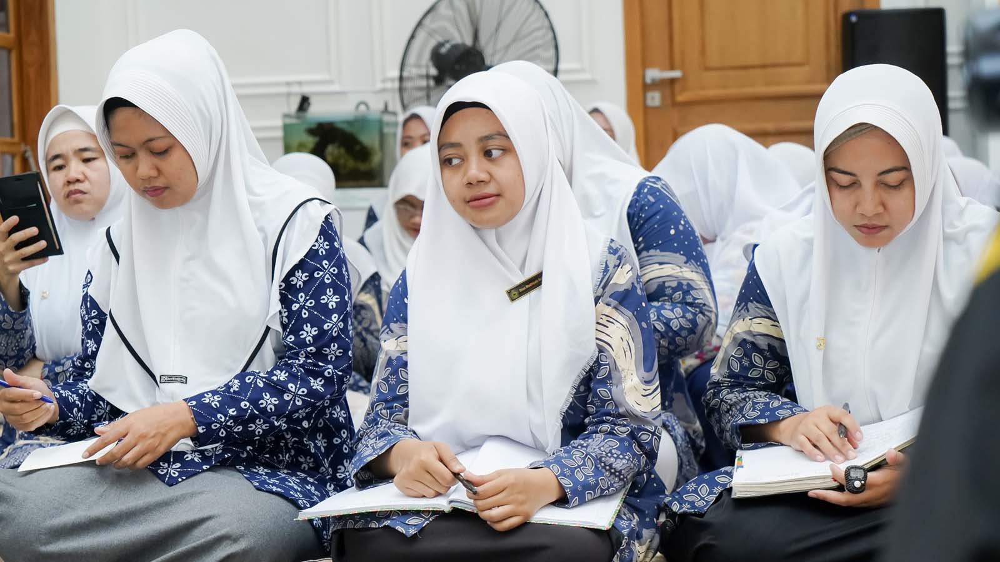
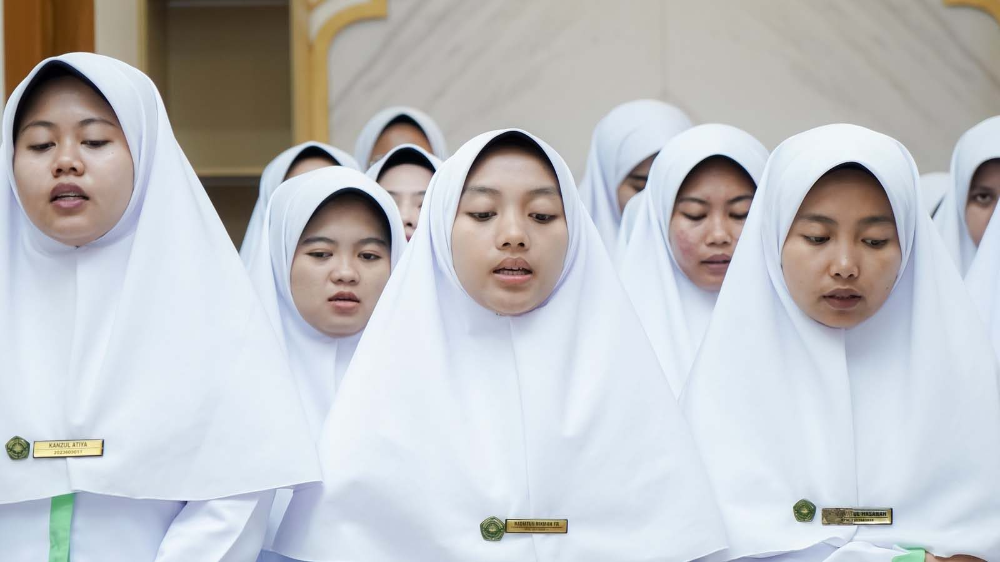
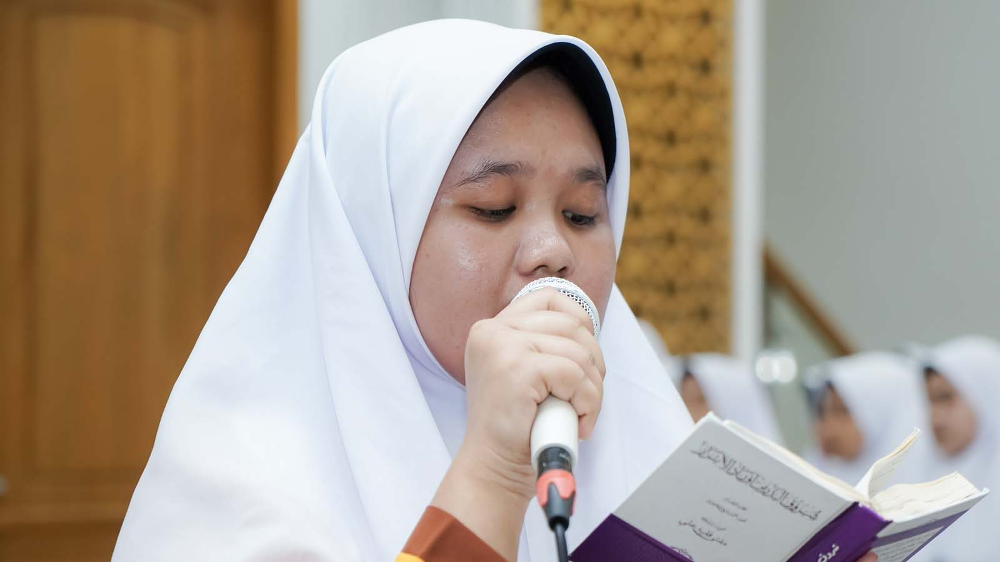
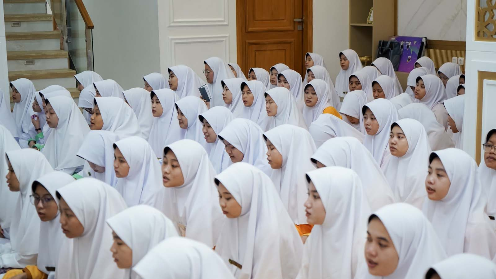